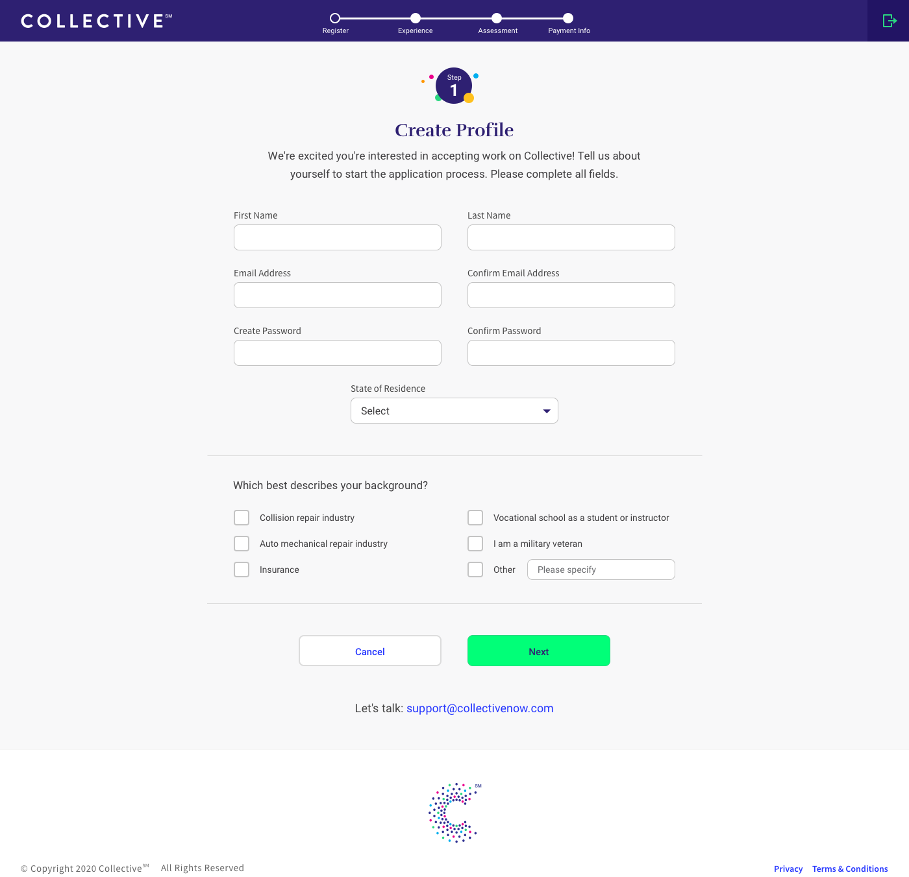
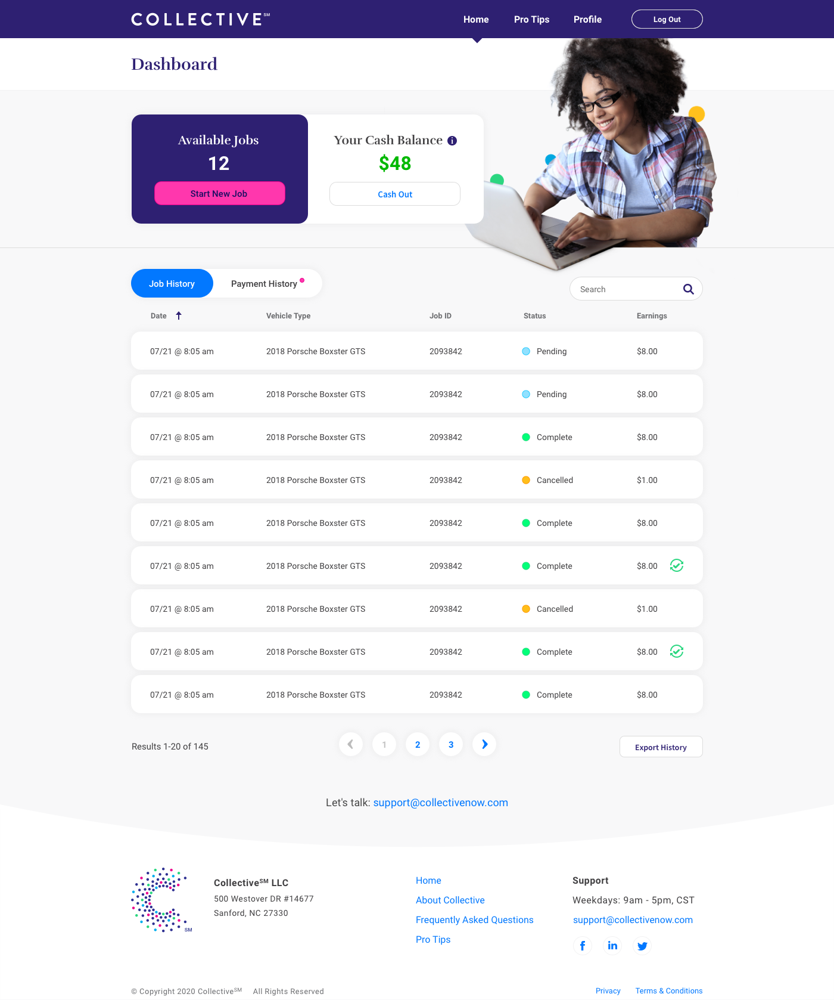
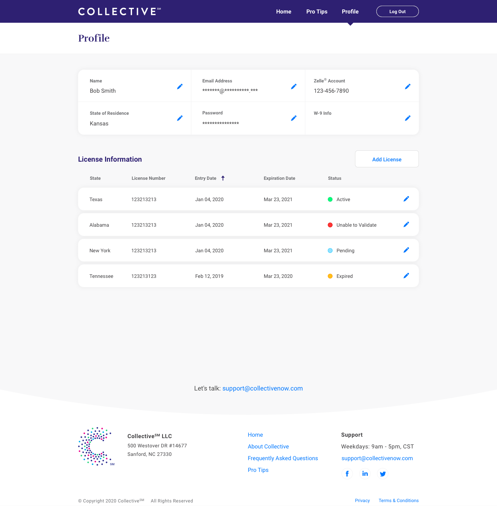

Allstate
Latest Design Work
Latest Design Work
The first product at Allstate was Photo Intake, a web app design for phones, that allows customers to take and submit damage photos to have their claims completed faster (and save the company money).
I came on to the product team as the sole designer after an initial self-guided application had already been created. I was tasked with creating a new guided flow with a new design that would take the user step-by-step around the vehicle, taking the photos necessary to create an initial estimate. A native app already existed that this new application would be replacing.
Since we had a pretty clear idea of what we were tasked with building, I had to think about what improvements if any needed to be made to the user flow and how we'd do that without deviating too much from the plan. From reviewing the native app, measuring analytics data and talking with stakeholders and users I came up with a few areas to consider:
Above are some of the final results, using Allstate brand guidelines. I was able to remove 10 screens from the original guided flow. One of the better improvements was deep linking the user into the process with a link provided in the Allstate native app or in an email/text which eliminated several steps; entering vehicle information and the claim number. The developers were also able to increase the save of photos making it downstream to the claims adjusters to help increase photo quality and estimate accuracy. I also reduce element clutter and gave screens elements consistent placement, especially the buttons taking you to next steps.
Photo Intake has several different flows depending on the type of damage (auto or property) and whether the process is guided, in which the user is asked for very specific photos or unguided, where they can upload photos of their choosing. I designer the app for each of these flows and for several other brands.

After a few months working on Photo Intake I was also given another product, Virtual Assist, an app that allows users to video chat and share damage in order to get claims processed quickly.
This was a more mature product. I started with a design pair and then took on the app by myself, primarily focusing on making improvements to the admin application that is used to route calls and manage internal users.
One of the big issues with this product was how calls were routed to internal and external claim adjusters and the tedium of making updates to dozens of adjusters' skills one at a time on a fairly regular basis. Work had to be done to create tiers of users, so video calls could be cascaded down from the front-line adjusters to the external adjusters when overflow occurs, as well as building two levels of skills to route property and auto calls to the right users. We also created the ability to add multiples of these skills to make the system even more flexible and cover as many use cases as possible.
Another update to the admin app was adding the ability to multi-select and make batch changes to users. This helped the administrators shuffle resources around quickly and manage who would receive calls based on their tier, primary and secondary skills.

Along with improving the routing of calls we were also looking to make improvements elsewhere in the experience. Below is a simple prototype I put together as an experiment, to see if the performance of the web app would be on par with the native app. I moved onto another product before getting the results but the ideas was to remove the need for the customer to have to visit the app store and download the application to initialize the video call. An unnecessary step, especially for users who will only use the application a single time.

My third product is called Collective, a platform to allow crowd workers to write damage reports in order to complete claims at a lower cost.
Collective is a new product that started in another location and I took over when it came to our lab. It started very much as a minimal viable product, just doing what we could to get it out into the world. So for this product the primary task has been to validate assumptions. Besides just making sure the app works, making sure that the quality of work completed on the site meets set expectations. To make smart decisions about the features we implement, I made sure we have the proper tracking setup to collect important metrics so we have the quantitative data to understand user behavior. I conducted interviews with many of the initial users to see what issues they were having and how we could get them up to speed on the platform faster. After being successful with our initial release, I'm meeting with stakeholders to help discuss future use cases for the product and larger features for the roadmap.
One of my tasks as the product designer is redesigning the application using colors, fonts and branding provided from marketing. Going to advocate increasing the contrast a little bit but overall the layout is cleaner.
One of the improvements I've been making is to reduce the number of steps to complete the assessment users must complete to become a member.

The job process interface uses the same clean and simple styles as the onboarding process.

New and existing users are taken to the dashboard after logging in. The dashboard is where users can start new jobs and see their job and payment history.
The profile is the latest addition to Collective. It is where users can manage their account as well as manage their license information. Licenses are required to do jobs in many states.
Overall process flows and screens for registration and completing work process on Collective. Originally created this to help onboard a new team member along with an Invision prototype of the application.